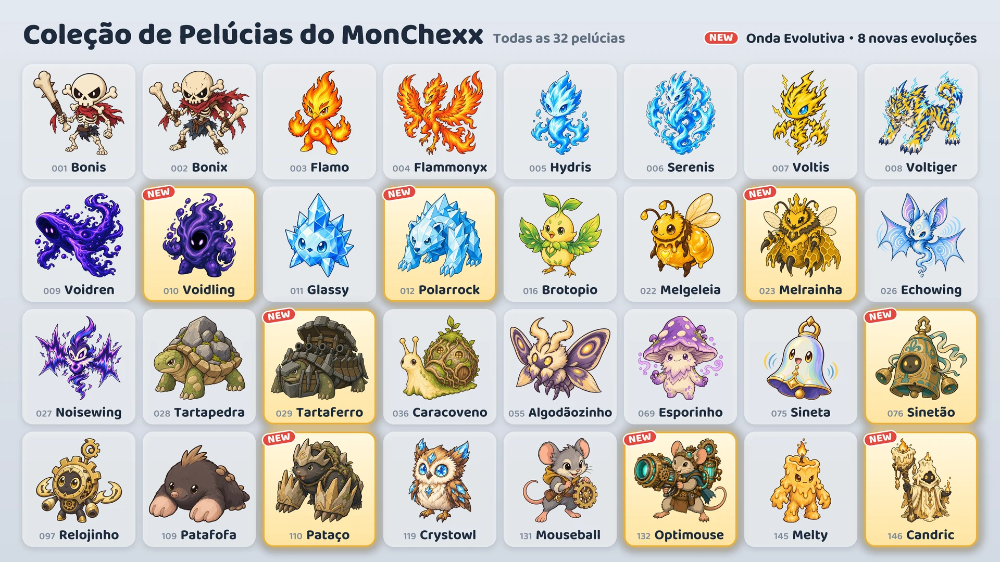

Em 17 de outubro, oito novas evoluções são adicionadas.

Oito novas evoluções
- Voidling: evolui de Voidren · Tanque
- Polarrock: evolui de Glassy · Tanque / Lutador
- Melrainha: evolui de Melgeleia · Suporte / À distância
- Tartaferro: evolui de Tartapedra · Tanque
- Sinetão: evolui de Sineta · Tanque / Suporte
- Pataço: evolui de Patafofa · Tanque / Assassino
- Optimouse: evolui de Mouseball · À distância
- Candric: evolui de Melty · Suporte / À distância
Como obter
- Máquina de Garra (evento): Durante o evento (de 17 a 24 de outubro), todas as máquinas, exceto as duas das pontas da fileira, têm uma das novas evoluções junto com outras duas pelúcias. Depois do evento, as novas evoluções passam a aparecer na mesma proporção que as outras pelúcias.
- Troca de Pelúcias: Você pode trocar 10 pelúcias repetidas pela pelúcia que escolher (Troca à escolha) ou 3 por uma pelúcia aleatória (Troca aleatória).
- Pacotes de pelúcias: As novas evoluções também podem sair nos pacotes de pelúcias.
Uso das pelúcias evoluídas
- Uma pelúcia evoluída é colecionada separadamente, e você pode colocá-la no seu time assim que a tiver.
- Em “Monte seu time”, selecione uma pelúcia e toque em Básica ou Evolução para mudar a forma dela.
- Um time só pode ter uma pelúcia de cada linha evolutiva.
- Uma pelúcia evoluída sobe de nível separadamente da pelúcia básica.
Novas pelúcias
Os valores “do Ataque”, “do Poder Mágico” ou “da Vida Máxima” aumentam conforme a pelúcia sobe de nível.
 Voidling · Tanque · Alcance 1
Voidling · Tanque · Alcance 1
- Absorção do Vazio: Aumenta a própria Vida Máxima em 200% do Poder Mágico mais 3% da Vida Máxima do início da batalha e recupera Vida igual ao aumento. Em seguida, causa a todos os inimigos num raio de 1 casa ao seu redor dano mágico igual a 10% da própria Vida Máxima. Quando sua Vida Máxima chega a 3 vezes a do início da batalha, este raio aumenta em 1 casa, e o mesmo a cada múltiplo a mais. O aumento de Vida Máxima dura até o fim da batalha.
- Banquete do Vazio: Ganha 10 de Mana sempre que um inimigo a até 4 casas de distância usa uma habilidade ativa.
 Polarrock · Tanque/Lutador · Alcance 1
Polarrock · Tanque/Lutador · Alcance 1
- Pancada de Geada: Causa ao alvo atual dano físico igual a 240% do Ataque e o deixa Congelado por 1,5 s. Um inimigo Congelado não age nem ganha Mana. Aos inimigos em um cone que se estende 2 casas atrás do alvo, causa dano físico igual a 180% do Ataque e aplica Geada, que reduz a Velocidade de Ataque deles em 15% por 6 s.
- Pele de Cristal: O dano mágico recebido é reduzido em 20%. Vale também para dano mágico contínuo e é calculado depois da Resistência Mágica.
 Melrainha · Suporte/À distância · Alcance 3
Melrainha · Suporte/À distância · Alcance 3
- Geleia Real: Cura todas as suas abelhas operárias em 10% da Vida Máxima delas e aumenta a Velocidade de Ataque delas em 200% por 3 s. Em seguida, se tiver menos abelhas que o máximo, invoca abelhas operárias em casas vazias ao seu redor, 1 de cada vez.
- Enxame Operário: Comanda abelhas operárias, no máximo 3 ao mesmo tempo. Os atributos das abelhas aumentam com o nível de Melrainha, e efeitos que afetam um número limitado de aliados nunca as escolhem. Cada abelha recebe, a cada segundo, dano mágico igual a 4% da própria Vida Máxima. Quando Melrainha é derrotada, as abelhas entram em fúria: o dano que causam e o dano que recebem são multiplicados por 2.
- Vida da abelha 60 · Ataque da abelha 40 (Lv.1)
 Tartaferro · Tanque · Alcance 1
Tartaferro · Tanque · Alcance 1
- Bombardeio Giratório: Dispara o canhão 6 vezes, girando no sentido anti-horário uma direção por vez, a partir da direção para onde está virado. Cada disparo atinge o primeiro inimigo a até 2 casas de distância naquela direção e causa dano físico igual a 500% do Ataque. O intervalo entre os disparos é de 0,5 s e muda com a Velocidade de Ataque. Não se move enquanto dispara; se ficar Atordoado ou Congelado, cancela os disparos restantes. Não ganha Mana até o bombardeio terminar.
- Casco Fortaleza: Para cada inimigo num raio de 1 casa ao seu redor, a própria Armadura e a Resistência Mágica aumentam em 35.
 Sinetão · Tanque/Suporte · Alcance 1
Sinetão · Tanque/Suporte · Alcance 1
- Toque do Sino: Ganha um escudo igual a 300% do Poder Mágico e provoca todos os inimigos num raio de 2 casas ao seu redor, ambos por 2 s. Durante esse tempo, os inimigos provocados atacam apenas ele e não podem começar a usar habilidades. Nesse mesmo período, sempre que recebe um ataque básico inimigo, causa a todos os inimigos num raio de 2 casas ao seu redor dano mágico igual a 25% do dano desse ataque antes da redução por Armadura e escudos. Não ganha Mana até o fim da Provocação.
- Ressonância: Sempre que outro aliado num raio de 2 casas ao seu redor usa uma habilidade ativa, recupera Vida igual a 50% do Poder Mágico.
 Pataço · Tanque/Assassino · Alcance 1
Pataço · Tanque/Assassino · Alcance 1
- Investida no Túnel: Cava um túnel removendo todos os seus enfraquecimentos, vai a 3 vezes sua Velocidade de Movimento até a casa vazia com mais inimigos num raio de 1 casa ao redor dela e, ao chegar, causa a todos os inimigos num raio de 1 casa ao seu redor dano físico igual a 500% do Ataque. Não pode ser atingido enquanto está debaixo da terra.
- Patas de Pedra: Ganha Armadura igual a 20% do próprio Ataque.
- Começa a batalha com 0 de Mana.
 Optimouse · À distância · Alcance 4
Optimouse · À distância · Alcance 4
- Canhão Laser: Carrega o canhão laser por 1,5 s na direção do alvo atual a até 4 casas de distância e então dispara um laser de 1 casa de largura até o fim da quadra, causando a todos os inimigos dentro do feixe dano mágico igual a 1000% do Ataque. A direção é definida quando a carga começa; se ficar Atordoado ou Congelado durante a carga, o disparo é cancelado.
- Circuito de Aquecimento: Cada ataque básico aumenta a própria Velocidade de Ataque em 20%, sem limite, e o aumento é zerado quando usa a habilidade ativa.
 Candric · Suporte/À distância · Alcance 3
Candric · Suporte/À distância · Alcance 3
- Chama Eterna: Deixa uma marca por 5 s no outro aliado com menos Vida atual. Também dá ao aliado marcado, pelo mesmo tempo, um escudo igual a 200% do próprio Poder Mágico. Quando um dano direto for suficiente para derrotar o aliado marcado, recebe 200% desse dano no lugar dele, e o aliado não recebe esse dano. Só uma marca fica ativa por vez, e ela não impede a derrota por dano contínuo.
- Cera Derretida: O dano direto que recebe e que passa pelo escudo é tirado da Vida aos poucos, ao longo de 4 s. Dano contínuo é recebido na hora.
Partidas ranqueadas e emblemas
- Os adversários das partidas ranqueadas também usam as novas evoluções.
- As oito novas evoluções não contam para o emblema “Coleção da Temporada 1”.
- O emblema “Especialista em Evolução” é obtido ao ter 5 pelúcias evoluídas diferentes. Agora existem 13 pelúcias evoluídas.
Confira as mudanças de balanceamento de todas as pelúcias nas notas da atualização “Balanceamento e Sistema de Batalha”.